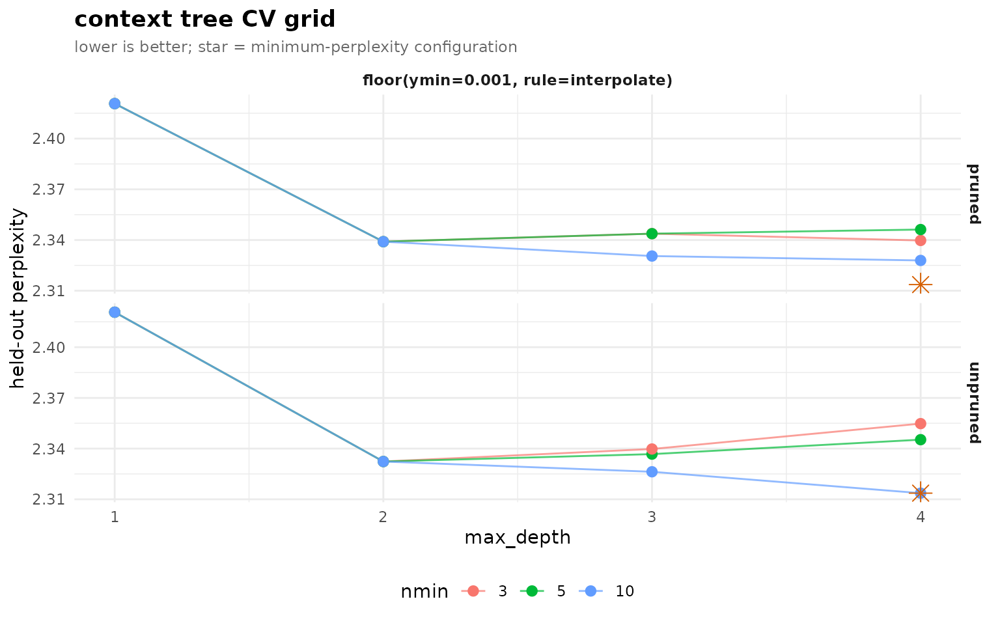

4. Advanced analysis: smoothing, tuning, comparison, and mining
Source:vignettes/advanced-analysis.Rmd
advanced-analysis.RmdThis vignette covers the parts of transitiontrees beyond
the basic fit-prune-predict loop: choosing a smoother and a pruning
rule, picking hyperparameters by cross-validation, quantifying pathway
reliability, comparing cohorts with a permutation test, introspecting
the fitted tree, and mining it for contexts and sequences of
interest.
Setup
We work throughout from one fit on the bundled
trajectories data and its pruned form – the same starting
point as Getting started.
library(transitiontrees)
data(trajectories)
set.seed(1)
tree <- context_tree(trajectories, max_depth = 4L, min_count = 5L)
pruned <- prune_tree(tree, criterion = "G2", alpha = 0.05)1. Smoothing schemes
Smoothing decides what probability an unseen next state
receives. Five schemes are implemented (floor,
laplace, kneser_ney, witten_bell,
jelinek_mercer). compare_smoothing() refits
under each and reports in-sample perplexity in one call.
compare_smoothing(trajectories, max_depth = 4L, min_count = 5L)
#> smoothing n_nodes perplexity
#> 1 floor 82 2.157411
#> 2 laplace 82 2.181832
#> 3 kneser_ney 82 2.167730
#> 4 witten_bell 82 2.161948
#> 5 jelinek_mercer 82 2.200473Two things to read. First, n_nodes is identical across
schemes – smoothing changes probabilities, never which
contexts exist; topology is set by min_count, not the
smoother. Second, do not pick a smoother on in-sample
perplexity (it rewards memorisation); the cross-validation in section 3
is the verdict that counts.
Handed a fitted tree, compare_smoothing()
re-smooths it under every scheme (via smooth_tree(),
without re-counting) instead of refitting – a smoothing sweep on the
already-pruned model in one call:
compare_smoothing(pruned)
#> smoothing n_nodes perplexity
#> 1 floor 25 2.239207
#> 2 laplace 25 2.243759
#> 3 kneser_ney 25 2.241328
#> 4 witten_bell 25 2.240596
#> 5 jelinek_mercer 25 2.2962562. Pruning criteria
prune_tree() supports four criteria.
compare_pruning() applies each – holding
alpha/threshold fixed – and reports how hard
each one trims.
compare_pruning(tree)
#> criterion n_nodes reduction_pct
#> 1 G2 25 69.5
#> 2 KL 78 4.9
#> 3 AIC 42 48.8
#> 4 BIC 36 56.1G2 (the likelihood-ratio test) and AIC ask
“is the extra depth justified given its sample size?”; BIC
punishes parameters harder (its penalty scales with log n);
KL at a lenient absolute threshold keeps
almost everything. Use G2 (or AIC) unless you
have a specific reason, and report the reduction – “most grown contexts
were unjustified” is itself a finding.
3. Cross-validated tuning
tune_tree() runs k-fold CV at the sequence
level over a grid of
(max_depth, min_count, smoothing, prune) and returns a
ranked data.frame with the winner on attr(., "best").
tg <- tune_tree(trajectories, max_depth = 1L:4L, folds = 5L, seed = 42L)
head(tg, 6)
#> <transitiontrees_tune> 6 configurations
#> max_depth nmin smoothing prune logLik n_scored
#> 4 10 floor(ymin=0.001, rule=interpolate) FALSE -1568.594 1870
#> 3 10 floor(ymin=0.001, rule=interpolate) FALSE -1578.793 1870
#> 4 10 floor(ymin=0.001, rule=interpolate) TRUE -1580.100 1870
#> 3 10 floor(ymin=0.001, rule=interpolate) TRUE -1582.190 1870
#> 2 3 floor(ymin=0.001, rule=interpolate) FALSE -1583.660 1870
#> 2 5 floor(ymin=0.001, rule=interpolate) FALSE -1583.660 1870
#> perplexity n_nodes_avg folds_failed
#> 2.313636 59.8 0
#> 2.326290 31.2 0
#> 2.327916 23.4 0
#> 2.330519 15.4 0
#> 2.332352 13.0 0
#> 2.332352 13.0 0
#>
#> best (min perplexity):
#> max_depth nmin smoothing prune logLik n_scored
#> 4 10 floor(ymin=0.001, rule=interpolate) FALSE -1568.594 1870
#> perplexity n_nodes_avg folds_failed
#> 2.313636 59.8 0
attr(tg, "best")
#> max_depth nmin smoothing prune logLik n_scored
#> 1 4 10 floor(ymin=0.001, rule=interpolate) FALSE -1568.594 1870
#> perplexity n_nodes_avg folds_failed
#> 1 2.313636 59.8 0(min_count and prune are swept by their
defaults; add smoothing = or a wider
min_count = to grow the grid.)
plot(tg)
The shape of the curve is as informative as the winning point: if
perplexity keeps falling with max_depth the process has
long memory; if it flattens early (as engagement data tends to) the
useful memory is short and deeper trees just overfit. Refit at the
chosen configuration on the full data for downstream use.
4. Bootstrap pathway reliability
bootstrap_pathways() resamples whole sequences and
reports, per pathway, stability_rate (the count reproduces)
and informative_rate (the G-squared against the parent
reproducibly clears the chi-square bar). Keeping the raw resamples lets
you also see the full distribution of any statistic.
boot <- bootstrap_pathways(pruned, iter = 200L, stat = "count",
seed = 1L, keep_resamples = TRUE)
boot
#> <transitiontrees_bootstrap> 200 resamples
#> stability : count in [0.50, 1.50] x observed, p < 0.05
#> informative: G^2 > qchisq(0.95, df=k-1) = 5.99, threshold 0.80
#> pathways : 25 total, 22 stable, 16 informative, 15 both
#>
#> top pathways (stable + informative first):
#> pathway depth count p_stability stability_rate
#> Average 1 751 0.005 1
#> Active 1 658 0.005 1
#> Active -> Active 2 433 0.005 1
#> Disengaged 1 325 0.005 1
#> Active -> Average 2 160 0.005 1
#> Average -> Active 2 144 0.005 1
#> Disengaged -> Average 2 122 0.005 1
#> Active -> Average -> Average 3 80 0.005 1
#> Average -> Active -> Active 3 70 0.005 1
#> Average -> Active -> Active -> Active 4 37 0.005 1
#> stable informative_rate informative mean_G2 ci_G2_lo ci_G2_hi
#> TRUE 1.000 TRUE 118.478 75.640 167.234
#> TRUE 1.000 TRUE 320.221 252.539 400.370
#> TRUE 0.990 TRUE 17.883 7.760 29.091
#> TRUE 1.000 TRUE 180.794 112.545 264.322
#> TRUE 1.000 TRUE 28.771 13.505 44.901
#> TRUE 1.000 TRUE 30.211 11.246 51.521
#> TRUE 1.000 TRUE 32.634 14.488 53.156
#> TRUE 0.875 TRUE 13.152 2.924 26.802
#> TRUE 0.990 TRUE 24.345 9.173 44.483
#> TRUE 0.860 TRUE 13.638 2.414 32.937
#> # ... 15 more pathways (use summary(x) for full table)summary() returns the tidy per-pathway table, sorted so
the trustworthy (stable and informative) pathways come first.
Each tracked statistic (count,
next_probability, divergence, G2)
carries a symmetric mean / sd / ci_lo / ci_hi quartet, so
you can report a bootstrap CI for any pathway statistic rather than a
bare point estimate:
head(summary(boot))
#> pathway depth count likely_next next_probability divergence
#> 1 Average 1 751 Average 0.6098535 0.11356246
#> 2 Active 1 658 Active 0.6975684 0.34948716
#> 3 Active -> Active 2 433 Active 0.7852194 0.02860157
#> 4 Disengaged 1 325 Disengaged 0.4830769 0.40306556
#> 5 Active -> Average 2 160 Average 0.5187500 0.12282588
#> 6 Average -> Active 2 144 Active 0.5000000 0.14727560
#> changes_prediction G2 p_stability stability_rate stable
#> 1 FALSE 118.23068 0.004975124 1 TRUE
#> 2 TRUE 318.79579 0.004975124 1 TRUE
#> 3 FALSE 17.16853 0.004975124 1 TRUE
#> 4 TRUE 181.59944 0.004975124 1 TRUE
#> 5 FALSE 27.24365 0.004975124 1 TRUE
#> 6 FALSE 29.40010 0.004975124 1 TRUE
#> informative_rate informative flip_consistency mean_count sd_count ci_count_lo
#> 1 1.00 TRUE 0.885 752.070 49.62366 652.95
#> 2 1.00 TRUE 0.885 657.700 55.88071 550.90
#> 3 0.99 TRUE 1.000 433.105 49.77925 347.75
#> 4 1.00 TRUE 0.785 326.365 33.36492 265.00
#> 5 1.00 TRUE 0.950 159.290 13.32115 136.00
#> 6 1.00 TRUE 0.620 143.935 13.10494 121.95
#> ci_count_hi mean_next_probability sd_next_probability ci_next_probability_lo
#> 1 844.325 0.6074684 0.02383435 0.5602254
#> 2 769.175 0.6970828 0.02745211 0.6442147
#> 3 535.200 0.7840172 0.02690600 0.7281187
#> 4 396.050 0.4872506 0.03622112 0.4314732
#> 5 183.050 0.5208427 0.03928445 0.4550557
#> 6 168.025 0.5250488 0.02598869 0.4843571
#> ci_next_probability_hi mean_divergence sd_divergence ci_divergence_lo
#> 1 0.6549035 0.11439634 0.02594025 0.07183403
#> 2 0.7533809 0.35344122 0.05055127 0.26995876
#> 3 0.8310155 0.03012959 0.01054014 0.01320413
#> 4 0.5611873 0.39995240 0.08188558 0.26407728
#> 5 0.5894276 0.13121723 0.04498657 0.05884796
#> 6 0.5811224 0.15297707 0.05681028 0.05396748
#> ci_divergence_hi mean_G2 sd_G2 ci_G2_lo ci_G2_hi
#> 1 0.16703707 118.47766 24.209041 75.64028 167.23404
#> 2 0.44497422 320.22058 39.049877 252.53941 400.37042
#> 3 0.05071584 17.88321 5.887328 7.75980 29.09055
#> 4 0.57174185 180.79424 40.744883 112.54453 264.32204
#> 5 0.21775813 28.77083 9.600579 13.50545 44.90087
#> 6 0.26903470 30.21052 10.582009 11.24551 51.52106plot_pathway_resamples() draws the full resample
distribution per pathway. A tight unimodal peak means the estimate is
well-determined; a bimodal or heavy-tailed panel is the tell that the
pathway is carrier-driven – a few sequences account for it, and
dropping them in a resample collapses it.
plot_pathway_resamples(boot, stat = "divergence", top = 6L)
5. Comparing two cohorts
Name an external group column and
context_tree(group = ) fits one tree per group in a single
call, returning a transitiontrees_group that
prune_tree() and compare_trees() consume
directly – no manual splitting or label-building. We compare high- and
low-achieving students on the bundled group_regulation_long
log.
data(group_regulation_long)
grp <- prune_tree(context_tree(group_regulation_long,
actor = "Actor", time = "Time", action = "Action",
group = "Achiever", max_depth = 2L, min_count = 10L))
cmp <- compare_trees(grp, iter = 199L, seed = 1L)
cmp
#> <transitiontrees_comparison> iter = 199
#> observed distance : 0.0478
#> null mean : 0.00368
#> p-value : 0.005
#>
#> top divergent pathways:
#> pathway count_a count_b divergence_ab divergence_ba
#> cohesion -> cohesion 40 0 0.473 0.447
#> synthesis 278 374 0.300 0.311
#> emotion -> emotion 86 0 0.133 0.251
#> discuss 2003 1948 0.178 0.204
#> cohesion 938 757 0.120 0.115
#> discuss -> coregulate 0 170 0.096 0.080
#> divergence_sym
#> 0.460
#> 0.305
#> 0.192
#> 0.191
#> 0.117
#> 0.088The printed comparison reports the observed distance
(pdist, a count-weighted symmetric-KL between the cohorts’
pathway distributions) and the p_value from permuting the
sequence-to-cohort labels. A significant result says the cohorts
generate genuinely different pathway dynamics, not a relabelling
artefact.
plot(cmp)
For the full per-axis decomposition (behavioural vs usage) and a tidy
pairwise distance_matrix, compare_groups()
consumes the same group =-fitted tree – see the
Complete analysis case vignette.
6. Tree introspection
Three accessors treat the tree as a queryable object.
query_pathway(pruned, c("Active", "Active")) # full distribution
#> Active Average Disengaged
#> 0.78521940 0.19399538 0.02078522
query_pathway(pruned, "Disengaged", next_state = "Disengaged") # one cell
#> [1] 0.4830769
pathway_exists(pruned, "Active -> Disengaged") # membership (no backoff)
#> [1] TRUEBy default an unseen context backs off to its longest matching
suffix; pass exact = TRUE to demand the literal node
(returns NA if it is not one) – the tool for auditing
which contexts the tree actually holds.
query_pathway(pruned, c("Active", "Average", "Active"), exact = TRUE)
#> Active Average Disengaged
#> NA NA NAsubtree() extracts the slice rooted at a context – the
same pathway API then runs on the slice:
sub <- subtree(pruned, "Active") # its banner reads "subtree of: Active"
sub
#> <transitiontrees> 7 nodes, depth <= 4, 3 states [pruned]
#> alphabet : Active, Average, Disengaged
#> fit on : 136 sequences, 1870 observations
#> smoothing: floor(ymin=0.001, rule=interpolate) min_count = 5
#> pruned by: G2 alpha = 0.05
#> subtree of: Active
head(tree_pathways(sub), 4)
#> pathway depth count likely_next next_probability
#> 1 Active 1 658 Active 0.6975684
#> 2 Active -> Active 2 433 Active 0.7852194
#> 3 Active -> Active -> Active 3 316 Active 0.8354430
#> 4 Average -> Active 2 144 Active 0.5000000
#> divergence changes_prediction
#> 1 NA NA
#> 2 0.02860157 FALSE
#> 3 0.01149187 FALSE
#> 4 0.14727560 FALSE7. Mining contexts and sequences
mine_contexts() scans the tree for contexts where a
chosen state is unusually likely (or unlikely):
mine_contexts(pruned, state = "Disengaged", min_prob = 0.5)
#> pathway depth count state
#> 1 Disengaged -> Average -> Average -> Disengaged 4 13 Disengaged
#> 2 Disengaged -> Disengaged 2 139 Disengaged
#> prob is_modal
#> 1 0.8461538 TRUE
#> 2 0.6762590 TRUEmine_sequences() ranks supplied sequences by how well
the model predicts them – the surprising ones are atypical
trajectories worth a closer look:
mine_sequences(pruned, newdata = trajectories, which = "surprising", n = 5L)
#> sequence_id n_scored log_lik perplexity
#> 1 33 1 -1.664397 5.282486
#> 2 96 1 -1.664397 5.282486
#> 3 97 1 -1.664397 5.282486
#> 4 101 1 -1.664397 5.282486
#> 5 104 1 -1.664397 5.2824868. Imputing gaps
impute_sequences() fills internal missing
states from the fitted tree – modal takes the most likely
state at each gap, prob samples from the predicted
distribution:
gappy <- list(c("Active", "Active", NA, "Disengaged"),
c("Average", NA, "Average"))
impute_sequences(pruned, gappy, method = "modal")
#> [[1]]
#> [1] "Active" "Active" "Active" "Disengaged"
#>
#> [[2]]
#> [1] "Average" "Average" "Average"9. Generating sequences
Every fitted tree is also a generative model.
generate_sequences() samples by walking the conditional
distributions; simulate() is the R-standard generic
wrapping it with nsim and a seed.
generate_sequences(pruned, n = 4L, length = 10L)
#> [,1] [,2] [,3] [,4] [,5]
#> [1,] "Average" "Active" "Active" "Active" "Active"
#> [2,] "Active" "Active" "Active" "Active" "Active"
#> [3,] "Disengaged" "Disengaged" "Disengaged" "Disengaged" "Disengaged"
#> [4,] "Active" "Disengaged" "Average" "Average" "Average"
#> [,6] [,7] [,8] [,9] [,10]
#> [1,] "Active" "Active" "Average" "Disengaged" "Active"
#> [2,] "Average" "Average" "Average" "Average" "Average"
#> [3,] "Disengaged" "Disengaged" "Disengaged" "Disengaged" "Disengaged"
#> [4,] "Average" "Active" "Average" "Active" "Active"
simulate(pruned, nsim = 4L, seed = 42L, length = 10L)
#> [,1] [,2] [,3] [,4] [,5]
#> [1,] "Disengaged" "Average" "Disengaged" "Active" "Disengaged"
#> [2,] "Disengaged" "Average" "Disengaged" "Average" "Average"
#> [3,] "Average" "Active" "Active" "Active" "Active"
#> [4,] "Disengaged" "Disengaged" "Average" "Disengaged" "Disengaged"
#> [,6] [,7] [,8] [,9] [,10]
#> [1,] "Average" "Average" "Average" "Average" "Average"
#> [2,] "Average" "Average" "Disengaged" "Average" "Average"
#> [3,] "Disengaged" "Active" "Average" "Average" "Disengaged"
#> [4,] "Active" "Average" "Disengaged" "Disengaged" "Disengaged"Generated sequences should look plausibly like the real ones – a sanity check that the model captured the gross dynamics – and give you a null behavioural corpus for stress-testing a downstream pipeline.